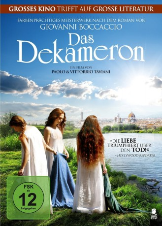

#11369 Das Dekameron
 
 IMDB-Wertung: 5.7 / 10
IMDB-Wertung: 5.7 / 10  Metascore: 0
Metascore: 0 
Der Film basiert auf dem “Dekameron”, einer Sammlung von Erzählungen aus dem 14. Jahrhundert aus der Feder von Giovanni Boccaccio. Die Rahmenhandlung spielt bei einem Landhaus in den Hügeln von Florenz. Dorthin sind sieben Mädchen und drei junge Männer vor der Pest geflüchtet. Um sich die Zeit zu vertreiben, wird jeden Tag ein anderer der Gesellschaft zum König oder zur Königin bestimmt und hat für das Wohlbehagen und die Unterhaltung der übrigen zu sorgen.
Jahr: 2015
Dauer: 120 Minuten
FSK: 12
Land: Italien Studio: Sunfilm EntertainmentTonspuren:
Untertitel: Deutsch,
Auflösung: 1080p (1920x1040) Größe: 4321 MB
Genre: Drama, Komödie, Geschichte
Regisseur: Paolo Taviani, Vittorio Taviani
Drehbuch: Giovanni Boccaccio, Paolo Taviani, Vittorio Taviani
Soundtrack: Giuliano Taviani, Carmelo Travia
Darsteller:
- Carolina Crescentini als
- Flavio Parenti als
- Vittoria Puccini als
- Michele Riondino als
- Kim Rossi Stuart als
 Riccardo Scamarcio als
Riccardo Scamarcio als - Kasia Smutniak als
- Jasmine Trinca als
- Camilla Diana als
- Rosabell Laurenti Sellers als
- Moise Curia als
- Valentina Bellè als
- Niccolò Calvagna als
- Lino Guanciale als
- Giovanni Guidelli als
- Leonardo Santini als
- Lello Arena als
- Paola Cortellesi als
- Josafat Vagni als
- Eugenia Costantini als
- Miriam Dalmazio als
- Fabrizio Falco als
- Melissa Anna Bartolini als
- Nicolò Diana als
- Beatrice Fedi als
- Ilaria Giachi als
- Barbara Giordano als
- Sergio Albelli als
- Francesca Agostini als
- Sonia Cavallini als
- Roberto Andrioli als
- Emiliano Belli als
- Francesco Pertici als
- Goffredo Guerrini als
- Rocco Di Gregorio als
- Alessandro Bertoncini als
- Riccardo Bocci als
- Luciano Casaredi als
- Gianluca Vannucci als
- Maria Teresa Campus als
- Simone Ciampi als
- Consuelo Ciatti als
- Vanni De Lucia als
- Silvia Frasson als
- Marco Iermanò als
- Cristina Liberati als
- Matilde Piana als
- Enrica Rosso als
- Nina Zampagni als
- Irene Vannelli als
Datei: X:\2015(A-F)\Dekameron, Das (2015, FSK12, 1920x1040).mkv seit 24.06.2019
Festplatte: HD 2015(A-Z)
 Es gibt insgesamt 143 Filme in der Gruppe '2015(A-F)'
Es gibt insgesamt 143 Filme in der Gruppe '2015(A-F)'